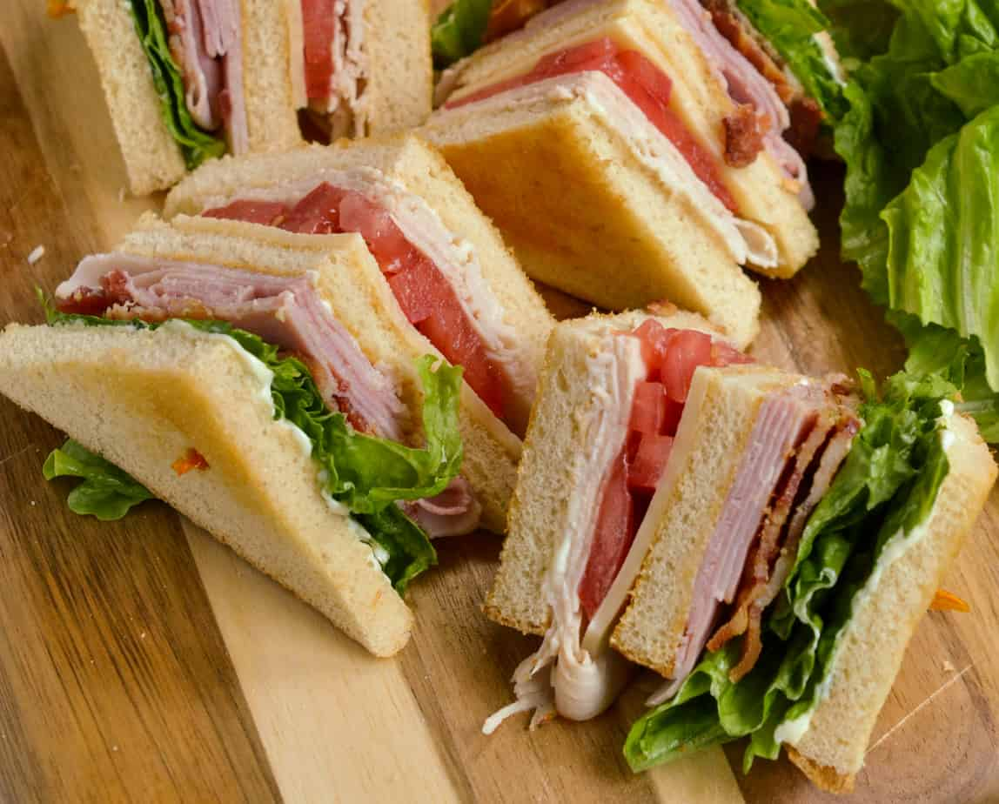

A Club Sandwich, also called a Clubhouse Sandwich, is a sandwich consisting of bread (traditionally toasted), sliced cooked poultry, fried bacon, lettuce, tomato, and mayonnaise.[1][2][3] It is often cut into quarters or halves and held together by cocktail sticks. Modern versions frequently have two layers which are separated by an additional slice of bread.
Back to Home